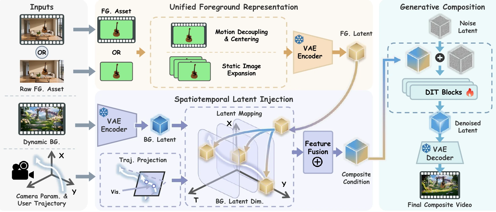

Static foreground
ECCV 2026 | Accepted Paper
FlexComposer
Unified Video Compositing from Images to Dynamic Footage with Flexible Trajectory Control
1 Hong Kong University of Science and Technology 2 Zhejiang University 3 The Chinese University of Hong Kong 4 Stanford University
01Static and dynamic foregrounds
02Flexible 3D trajectory control
03End-to-end scene harmonization
Paper overview
One framework.
Any foreground.
Generative video compositing should preserve the identity and motion of an inserted asset while giving creators precise control over where it moves. Existing systems typically trade one for the other.
FlexComposer standardizes static images and dynamic footage in a canonical foreground space, transports their latent features along a user trajectory, and synthesizes the final video with coherent occlusion, lighting, and shadows.
Dynamic foreground
Intrinsic motion preserved
Harmonization
Lighting and shadow adaptation
Core design
Control without sacrificing fidelity.
Unified canonical foreground
Stabilizes dynamic clips and expands static images into one centered representation, separating intrinsic motion from global displacement.
Spatial-aware latent injection
Transports canonical VAE features directly onto user-defined trajectories with a parameter-free mapping and visibility-aware occlusion.
Synthetic-to-real curriculum
Combines procedural geometry, cinematic real footage, and generative data to learn control, realism, and open-domain composition in stages.
Method
Canonicalize, transport, compose.
A single conditional generation pipeline replaces brittle reconstruction, lighting estimation, and rendering stages.

01 / RepresentCenter and encode heterogeneous foreground assets.
02 / TransportProject the trajectory and move features in latent space.
03 / GenerateDiffuse a coherent composite with background context.
Video results
Composition in motion.
Occlusion
Airplane across a steel bridge
Trajectory
Car through a dynamic landscape
Micro-motion
Animated subject in a natural scene
One scene, multiple inserted assets.
Background
Balloon composition
Chair composition
The same background supports different objects and paths.
Background
Teapot / Path A
Teapot / Path B
Motorcycle / Path A
Motorcycle / Path B
Intrinsic dynamics
Preserving a walking gait
Environment
Dynamic asset with relighting
Appearance
Illumination and reflection adaptation
3D rotation
Controlled car viewpoint
3D control
Aircraft rotation with scene consistency
Viewpoint change
Rotating subject over open water
3D rotation
Motorcycle orientation control
Camera-relative motion
Car rotation across a new scene
Pose control
Continuous viewpoint transformation
Motion remapped into a new environment
Background
Source motion
FlexComposer
Intrinsic dynamics preserved during transfer
Background
Source motion
FlexComposer
More cases
Across subjects, scenes, and trajectories.
Quantitative results
Better control, consistency, and realism.
Best trajectory error in the V2V setting.
Lower than AnyV2V, VACE, and GenCompositor.
Preserves asset identity through motion and placement.
Balances photometric and geometric scene consistency.
01
Static foreground compositing
Ours vs. Kling 1.5, Tora, and Wan-Move
02
Dynamic foreground compositing
Ours vs. AnyV2V, VACE, and GenCompositor
Ablation
Every component has a visible job.
Background context, trajectory conditioning, visibility reasoning, and canonical representation each address a distinct failure mode.
Component ablation
One controlled case, five model variants
W/o BG context
Background structure becomes less stable.
Text only
Spatial control is weakened.
W/o visibility
Occlusion ordering is less reliable.
W/o canonical
Local and global motion interfere.
Full model
Control and appearance remain coherent.
Canonical representation
A second dynamic foreground case
W/o canonical representation
Global motion conflicts with the subject's local dynamics.
Full model
Local motion remains stable along the target trajectory.
Failure analysis
A challenging composition case.
Complex foreground motion and close scene interaction remain difficult. The same input is shown across commercial systems and FlexComposer for direct inspection.
Paper
FlexComposer
Unified Video Compositing from Images to Dynamic Footage with Flexible Trajectory Control
1 HKUST2 Zhejiang University3 CUHK4 Stanford University
ECCV 2026
@inproceedings{zhang2026flexcomposer,
title={FlexComposer: Unified Video Compositing from Images to Dynamic Footage with Flexible Trajectory Control},
author={Zhang, Songchun and Guo, Sitong and Kong, Xianghao and Liu, Pengwei and Guo, Yuwei and Zhang, Lvmin and Rao, Anyi},
booktitle={European Conference on Computer Vision (ECCV)},
year={2026}
}